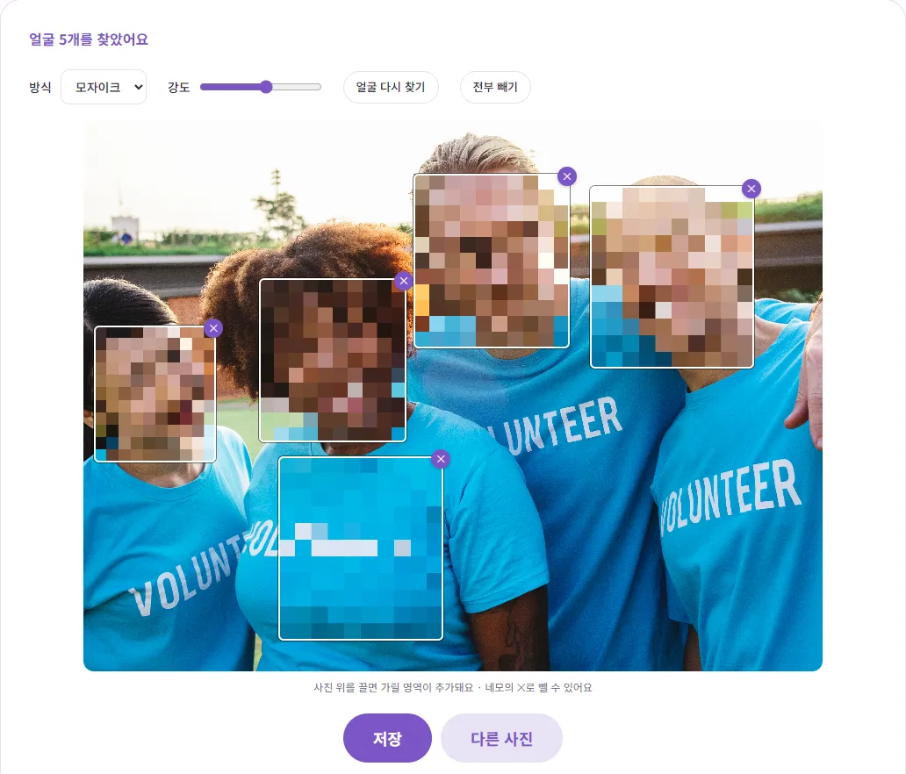
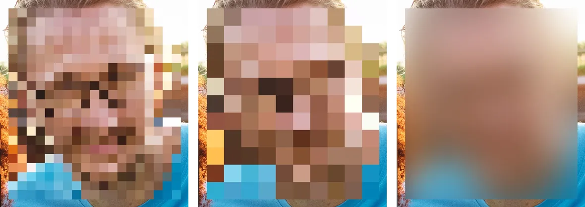
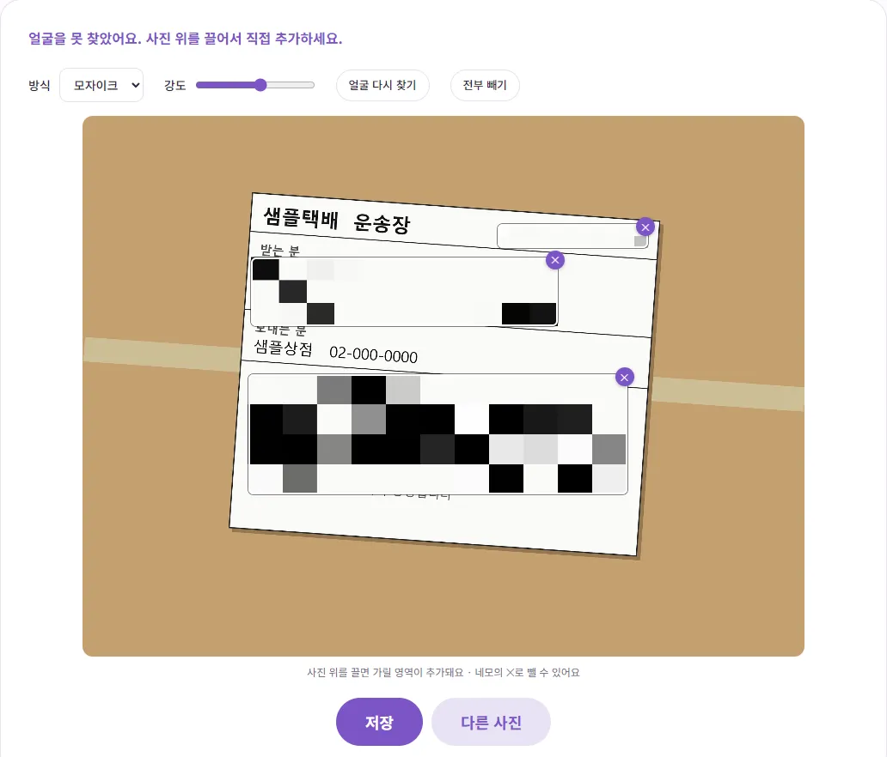

사진 올리기 전에 얼굴과 개인정보, 어떻게 가릴까요?
행사 사진이나 아이 사진을 블로그나 단톡방에 올리려는데, 다른 사람 얼굴이나 택배 송장 주소가 그대로 보여서 망설여지시죠? 이 글에서는 무엇을 가려야 하는지부터, 얼굴을 자동으로 찾아 모자이크하고 놓친 곳을 직접 가리는 방법까지 실제로 해 본 그대로 알려 드릴게요.
왜 올리기 전에 가려야 할까요?
얼굴은 생각보다 많은 걸 알려 줘요. 개인정보 보호법 제2조는 '개인정보'를 살아 있는 개인에 관한 정보로서 성명, 주민등록번호와 함께 '영상 등을 통하여 개인을 알아볼 수 있는 정보'라고 정의하고 있어요. 사진 속 얼굴로 그 사람이 누군지 알아볼 수 있다면 이 정의에 해당할 수 있다는 뜻이에요.
초상권도 있어요. 대법원은 2006년 판결(2004다16280)에서 사람은 누구나 자신의 얼굴 등 특정인임을 알아볼 수 있는 신체적 특징이 함부로 촬영되거나 공표되지 않고 영리적으로 이용당하지 않을 권리를 가지며, 이 초상권은 헌법 제10조로 보장되는 권리라고 밝혔어요. 같은 판결은 공개된 장소에서 찍었다는 이유만으로 침해가 정당해지지는 않는다고도 했어요.
다만 실제로 문제가 되는지는 사진의 목적과 상황에 따라 판단이 달라지고, 이 글은 법률 상담이 아니에요. 확실한 건, 동의를 받지 않은 사람의 얼굴은 가리고 올리는 쪽이 서로 마음 편하다는 거예요.
이런 사진은 올리기 전에 한 번 더 보세요
| 사진 | 가리면 좋은 것 |
|---|---|
| 모임·행사 단체사진 | 동의를 받지 않은 참석자 얼굴, 목에 건 이름표 |
| 아이 사진 | 다른 집 아이 얼굴, 이름표·명찰, 가방이나 옷에 적힌 이름, 학교·어린이집을 알 수 있는 간판 |
| 중고거래·후기 사진 | 택배 송장의 이름·전화번호·주소, 영수증의 카드번호·주문번호 |
| 여행·거리 사진 | 지나가는 사람 얼굴, 차량 번호판, 집 주소가 보이는 문패 |
| 화면 캡처 | 대화 상대 이름과 프로필 사진, 전화번호, 계좌번호 |
얼굴만이 아니라 '조합하면 누군지 알 수 있는 정보'도 함께 보세요. 이름표 하나, 교복 하나만으로는 몰라도 사는 동네가 보이는 배경과 합쳐지면 위치가 드러날 수 있어요.
얼굴 모자이크, 순서대로 따라 하기
- 얼굴 모자이크를 열고 사진을 올리세요. 올리자마자 AI가 얼굴을 찾아 네모로 가려요.
- 위쪽 '방식'에서 모자이크나 흐림을 고르고, '강도'를 조절하세요. 바꾸면 화면이 바로 바뀌어요.
- 가린 네모가 엉뚱한 곳에 있으면 네모 오른쪽 위 ✕를 눌러 빼세요.
- 빠진 곳은 사진 위를 마우스로 끌어서 네모를 직접 추가하세요.
- '저장'을 누르면 이름 뒤에 _blur가 붙은 파일이 내려와요.

직접 해 보니 얼굴이 크게 나온 4명 사진(4000×2991)은 올리고 약 1초 만에 네 사람 얼굴을 모두 찾았어요. 그런데 한 사람의 티셔츠 가슴 부분도 얼굴로 잘못 잡아서 네모가 5개 생겼어요. 이런 건 ✕로 빼면 되고, 그대로 둬도 엉뚱한 곳이 모자이크될 뿐 얼굴이 드러나지는 않아요. 저장한 파일은 원본과 같은 크기였고, 원본에 있던 촬영 정보(EXIF)는 저장본에 남아 있지 않았어요. 얼굴 인식도 내 브라우저 안에서 이뤄져서 사진이 서버로 올라가지 않아요.
자동으로 못 찾는 얼굴은 직접 가리세요
자동 찾기를 믿고 바로 저장하면 안 되는 이유가 있어요. 강당에서 20명 넘게 서서 찍은 행사 사진(3264×2448)을 넣어 봤더니, 얼굴이 사진 전체에서 작게 나와서 '얼굴을 못 찾았어요'라는 결과가 나왔어요. 이 도구가 쓰는 얼굴 인식 모델은 가까이서 찍은 얼굴에 맞춰져 있어서, 멀리서 찍은 단체사진이나 옆모습, 마스크·모자로 가려진 얼굴은 놓칠 수 있어요.
- 한 줄로 선 단체사진: 얼굴을 하나하나 그리지 말고, 머리 높이를 가로로 길게 한 번 끌어 띠처럼 가리면 빨라요. 위 행사 사진도 이렇게 네모 하나로 모든 얼굴을 가렸어요.
- 몇 사람만 가릴 때: 동의한 사람은 두고 나머지 얼굴에만 네모를 그리세요. 자동으로 잡힌 네모 중 가리지 않을 사람은 ✕로 빼면 돼요.
- 저장 전 확대 확인: 사진 가장자리, 뒷줄, 유리에 비친 얼굴, 액자나 화면 속 얼굴까지 꼭 눈으로 확인하세요.
- 네모를 잘못 뺐을 때: '얼굴 다시 찾기'를 누르면 직접 그린 네모는 그대로 두고 얼굴만 다시 찾아요. '전부 빼기'는 자동·직접 네모를 모두 지우니 처음부터 다시 그릴 때만 쓰세요.
휴대폰에서도 사진 위를 손가락으로 끌면 네모가 추가돼요. 다만 사진 위에서는 화면이 스크롤되지 않으니, 위아래로 움직일 때는 사진 바깥쪽을 밀어 주세요.
모자이크와 흐림, 무엇을 고를까요?

| 모자이크 | 흐림 | |
|---|---|---|
| 보이는 모습 | 네모난 색 칸 | 뿌옇게 번짐 |
| 느낌 | '가렸다'는 게 분명함 | 사진 분위기가 덜 깨짐 |
| 잘 맞는 곳 | 송장·번호판 같은 글자, 확실히 숨겨야 하는 얼굴 | 배경 속 지나가는 사람, 분위기가 중요한 사진 |
강도는 1부터 10까지인데, 높일수록 모자이크 칸이 커지고 흐림이 강해져요. 테스트에서는 강도 2에서도 얼굴을 알아보기 어려웠지만, 칸이 작을수록 윤곽이 더 남아요. 특히 글자는 칸이 작으면 형태가 비칠 수 있으니 기본값(6) 이상을 권해요. 저장한 사진의 가린 부분은 원래 모습으로 되돌릴 수 없게 픽셀 자체가 바뀌어요. 대신 원본 파일은 내 컴퓨터에 그대로 남아 있으니, 올릴 때 _blur가 붙은 파일을 골랐는지 확인하세요.
차량번호·주소·택배 송장도 같은 방법으로
얼굴이 아닌 것은 자동으로 찾아 주지 않아요. 대신 사진 위를 끌어 그린 네모는 얼굴과 똑같이 모자이크나 흐림이 들어가서, 번호판·문패·송장·영수증도 가릴 수 있어요. 직접 만든 가짜 송장 사진으로 해 봤어요.

- 받는 분 정보: 이름, 전화번호, 주소를 한 번에 덮도록 넉넉하게 그리세요.
- 운송장 번호와 바코드: 번호로 배송 조회를 할 수 있는 경우가 많고, 바코드나 QR코드에도 정보가 담겨 있을 수 있어서 함께 가리는 게 안전해요.
- 차량 번호판: 번호판보다 조금 크게 그려야 기울어진 글자 끝이 남지 않아요.
이 도구는 네모 모양으로만 가릴 수 있고, 검은색으로 꽉 칠하는 기능은 없어요. 주민등록번호처럼 아주 민감한 정보라면 모자이크 대신 이미지 자르기로 그 부분을 아예 잘라 내거나, 처음부터 사진에 나오지 않게 찍는 게 가장 확실해요. 반대로 '이 사본은 ○○ 제출용'처럼 쓰임새를 표시하고 싶다면 워터마크 넣는 법을 참고하세요.
참고한 자료
글에서 소개한 도구, 회원가입 없이 바로 써 보세요.
🙈 얼굴 모자이크 바로 쓰기